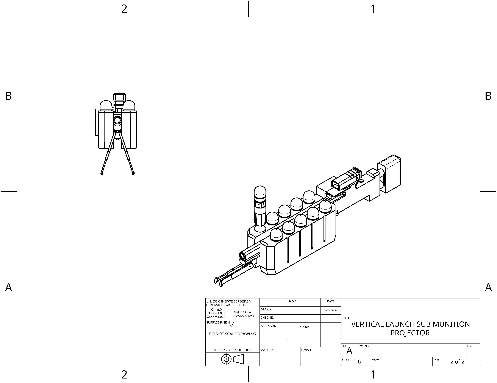
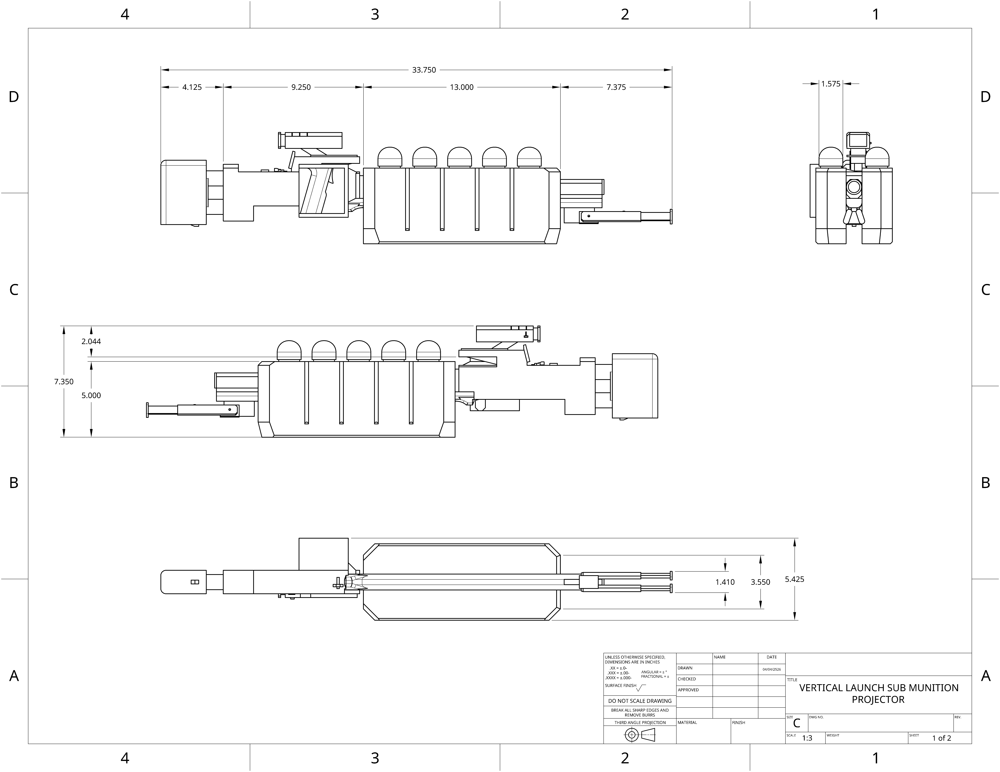

The Vertical Launch Sub Munition projector is an optional line of sight weapon utilizing 40mm EMPHE projectiles. Is able to output mass amounts of ordinance in a short time period, though is more susceptble to jamming than most other weapons.
 | | | | | | |
|---|---|---|
| Damage: | 25 + 75 | (Headshot capable) |
| Velocity: | 300mps | |
| Armor penetration: | 40mm | |
| Rate of fire: | 200rpm | |
| Magazine size: | 8 |